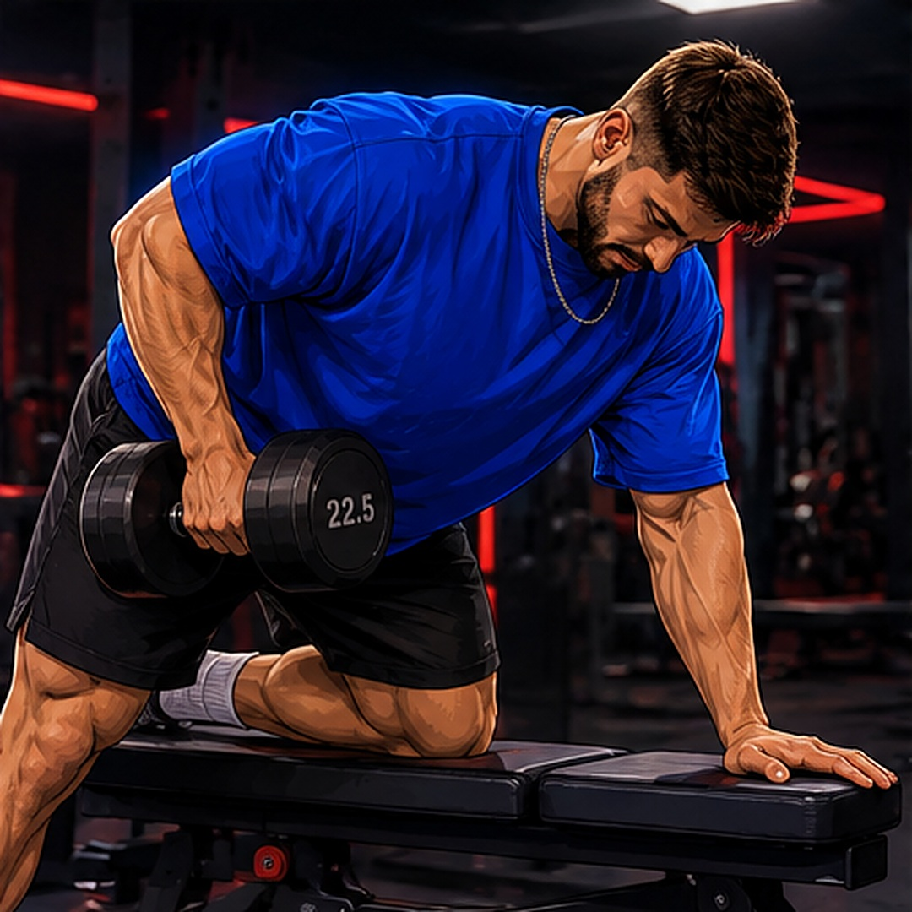

5
CLAVES
que van a acelerar tus
resultados en el gimnasio
@pablohentrenador
DESLIZA
{n}
CLAVE {n} DE 5
{K}
{KS}
0{n}
{T}
{P}
@pablohentrenador
{n}/5

¿Cuál vas a
aplicar hoy?
Escríbeme
PLAN
por DM
y te preparo un entrenamiento
hecho para ti 💪
@pablohentrenador
GUARDA · COMPARTE